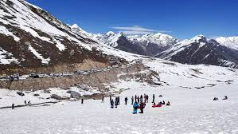
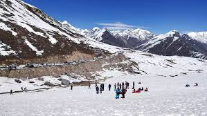

Manali is a resort town in the Kullu district of Himachal Pradesh, India. It's a popular tourist destination known for its snow-capped mountains, forests, and orchards.
1. What is special about Manali?
Manali is all about an open valley with a deodar and pine forest cover, freshwater streams and peaks perennially covered with snow making it a perfect place to unwind and recharge. Not only does it have some fine staying places, but there also many spiritual retreats that call for a visit.
2. What is the famous thing in Manali?
Handmade Woolen Shawls or Blankets: Manali is famous for its handwoven woolen products, including shawls, sweaters, and blankets. The high-quality wool and intricate designs make them a popular choice among visitors.
3. Which month is best to visit Manali?
Summer: The months between March and June are considered the peak tourist season in Manali. The weather during this time is pleasant, making it ideal for outdoor activities such as trekking, paragliding, river rafting, and sightseeing.
 
